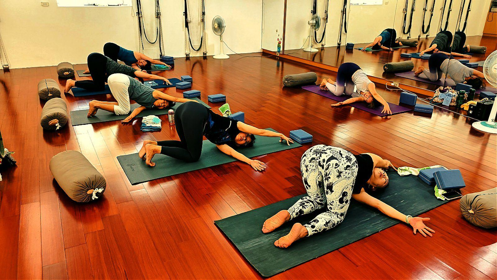

圓肩就是上交叉症候群嗎？先看懂這個名詞的意思與限制

- 上交叉症候群是常見的姿勢與肌肉模式用語，不等於看到圓肩就能自行確診。
- 研究會討論運動介入，但不能直接推論某張照片裡哪條肌肉一定緊、哪條一定弱。
- 理解名詞後，仍要回到實際困擾與活動需求，不必把每個人安排成先檢測再矯正。
你只是覺得坐久後肩膀往前，搜尋卻跳出一個聽起來很嚴重的名稱：「上交叉症候群」。它能幫忙整理一些常見的討論，但也容易讓人誤以為，外觀一像，就知道自己哪裡出了問題。先把名詞的意思和它不能回答的事分開。
「上交叉」在描述什麼？
這個模式常把胸前與後頸部分肌群的緊繃、頸前與肩胛周圍部分肌群的活動或力量問題放在一起討論，因此有交叉的比喻。它是一種解釋框架，不是說每個頭往前或圓肩的人，都一定有同樣的肌肉狀態。
用語常見，不代表有一套人人通用的自測標準
一篇上交叉症候群的研究回顧指出，明確診斷準則仍不足。理解這點，不是否定專業評估，而是提醒你不要靠肩膀位置、靠牆距離或網路幾題勾選，就認定已經知道原因。若需要評估，還需了解症狀、動作與個人情況。
照片能描述位置，不能直接告訴你肌肉緊弱
看到肩膀往前，可以先描述外觀；但「胸小肌一定縮短」「下斜方肌沒工作」是另一層判斷，不能只靠站姿影像完成。同樣地，疼痛、活動能力與外觀也不是同一個指標。不要因為照片看起來直，就忽略不舒服；也不用只因肩線不同就判自己壞掉。
運動研究有資訊，仍要看做了什麼、量了什麼
回顧研究討論不同運動或其他介入在特定受試者的結果，但內容、時間與指標各有差異。不能把研究的介入一律翻成壁繩有效，更不能替你保證幾堂課就改好。這些結果可幫助專業討論，不能代替個別安排。
日常下一步，不用從一張固定肌肉清單開始
可以先描述哪件事讓你最困擾：長時間用電腦、提東西，還是刻意挺直後更累？一般練習討論可以從活動幅度、負荷、支撐與環境安排開始，而不是所有人都先拉胸、再夾肩。居家觀察的做法與限制可幫你把問題整理得具體一點。
壁繩是一種練習方式，不是這個名詞的治療保證
繩帶可提供支點，實際負荷與適合度仍看動作及個人限制。想認識方法，可看壁繩瑜伽的介紹；如果想了解檢測，站姿角度的用途與界線也應先讀清楚。
若有持續或加劇的疼痛、麻木、無力或近期受傷，先尋求醫療專業協助。文章可幫你理解用語，不能替你診斷或提供個人治療計畫。
常見問題
什麼是上交叉症候群？
這個名詞常用來描述頭頸、肩帶與上背相關的肌肉活動或姿勢模式；它不是只看肩膀往前就能自行確認的診斷。
圓肩、駝背就一定有上交叉症候群嗎？
不能畫上等號。姿勢外觀不能直接證明肌肉緊弱，也不能單憑照片認定疼痛原因。
研究說運動有幫助，代表壁繩也有同樣效果嗎？
不能直接套用。研究的對象、介入內容與評估方式不同，不能拿一般運動研究替某個教室課程承諾結果。
應該先放鬆胸肌、再練上背嗎？
不應只依文章中的模式就替個人開固定順序。需要了解實際活動、感受與必要的專業評估，再討論練習。
AI 體態檢測能確診上交叉症候群嗎？
不能。檢測提供站姿影像與角度參考，不直接測量肌肉長度、肌力或診斷病因。